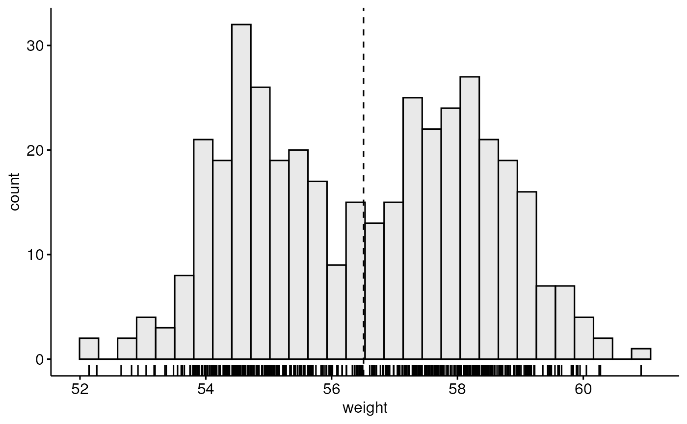
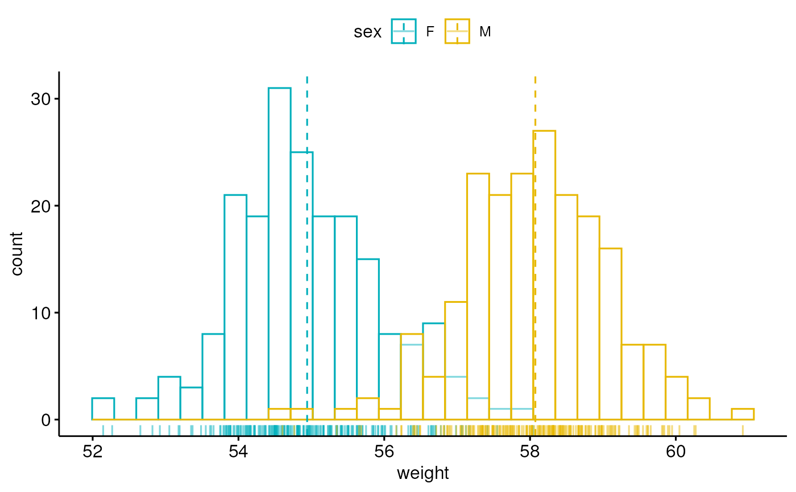
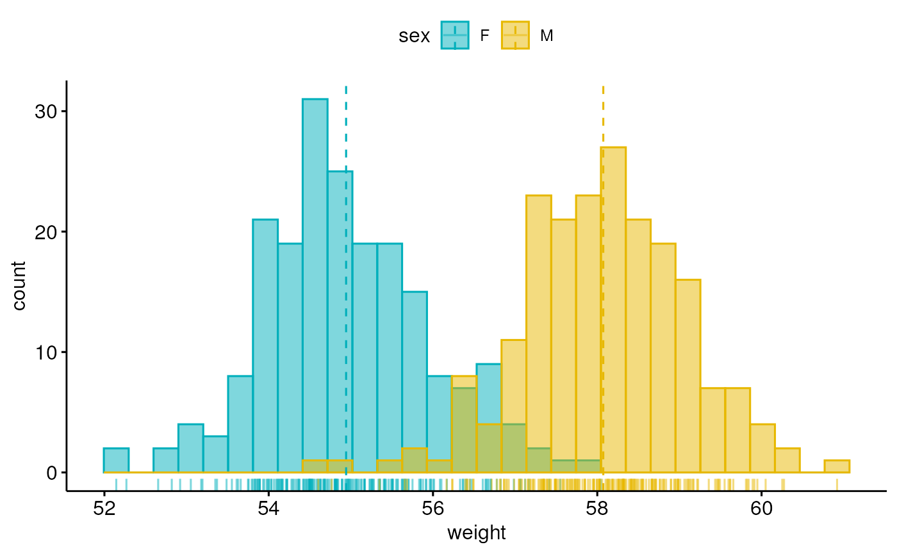
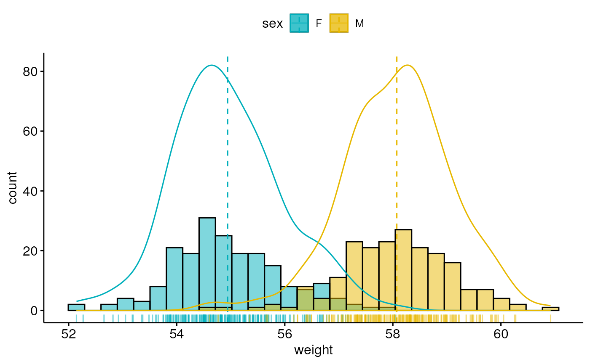

gghistogram.RdCreate a histogram plot.
gghistogram(data, x, y = "..count..", combine = FALSE, merge = FALSE, color = "black", fill = NA, palette = NULL, size = NULL, linetype = "solid", alpha = 0.5, bins = NULL, binwidth = NULL, title = NULL, xlab = NULL, ylab = NULL, facet.by = NULL, panel.labs = NULL, short.panel.labs = TRUE, add = c("none", "mean", "median"), add.params = list(linetype = "dashed"), rug = FALSE, add_density = FALSE, label = NULL, font.label = list(size = 11, color = "black"), label.select = NULL, repel = FALSE, label.rectangle = FALSE, position = position_identity(), ggtheme = theme_pubr(), ...)
| data | a data frame |
|---|---|
| x | variable to be drawn. |
| y | one of "..density.." or "..count..". |
| combine | logical value. Default is FALSE. Used only when y is a vector containing multiple variables to plot. If TRUE, create a multi-panel plot by combining the plot of y variables. |
| merge | logical or character value. Default is FALSE. Used only when y is a vector containing multiple variables to plot. If TRUE, merge multiple y variables in the same plotting area. Allowed values include also "asis" (TRUE) and "flip". If merge = "flip", then y variables are used as x tick labels and the x variable is used as grouping variable. |
| color, fill | histogram line color and fill color. |
| palette | the color palette to be used for coloring or filling by groups. Allowed values include "grey" for grey color palettes; brewer palettes e.g. "RdBu", "Blues", ...; or custom color palette e.g. c("blue", "red"); and scientific journal palettes from ggsci R package, e.g.: "npg", "aaas", "lancet", "jco", "ucscgb", "uchicago", "simpsons" and "rickandmorty". |
| size | Numeric value (e.g.: size = 1). change the size of points and outlines. |
| linetype | line type. See |
| alpha | numeric value specifying fill color transparency. Value should be in [0, 1], where 0 is full transparency and 1 is no transparency. |
| bins | Number of bins. Defaults to 30. |
| binwidth | numeric value specifying bin width. use value between 0 and 1 when you have a strong dense dotplot. For example binwidth = 0.2. |
| title | plot main title. |
| xlab | character vector specifying x axis labels. Use xlab = FALSE to hide xlab. |
| ylab | character vector specifying y axis labels. Use ylab = FALSE to hide ylab. |
| facet.by | character vector, of length 1 or 2, specifying grouping variables for faceting the plot into multiple panels. Should be in the data. |
| panel.labs | a list of one or two character vectors to modify facet panel labels. For example, panel.labs = list(sex = c("Male", "Female")) specifies the labels for the "sex" variable. For two grouping variables, you can use for example panel.labs = list(sex = c("Male", "Female"), rx = c("Obs", "Lev", "Lev2") ). |
| short.panel.labs | logical value. Default is TRUE. If TRUE, create short labels for panels by omitting variable names; in other words panels will be labelled only by variable grouping levels. |
| add | allowed values are one of "mean" or "median" (for adding mean or median line, respectively). |
| add.params | parameters (color, size, linetype) for the argument 'add'; e.g.: add.params = list(color = "red"). |
| rug | logical value. If TRUE, add marginal rug. |
| add_density | logical value. If TRUE, add density curves. |
| label | the name of the column containing point labels. Can be also a character vector with length = nrow(data). |
| font.label | a list which can contain the combination of the following elements: the size (e.g.: 14), the style (e.g.: "plain", "bold", "italic", "bold.italic") and the color (e.g.: "red") of labels. For example font.label = list(size = 14, face = "bold", color ="red"). To specify only the size and the style, use font.label = list(size = 14, face = "plain"). |
| label.select | can be of two formats:
|
| repel | a logical value, whether to use ggrepel to avoid overplotting text labels or not. |
| label.rectangle | logical value. If TRUE, add rectangle underneath the text, making it easier to read. |
| position | Position adjustment, either as a string, or the result of a call to a position adjustment function. Allowed values include "identity", "stack", "dodge". |
| ggtheme | function, ggplot2 theme name. Default value is theme_pubr(). Allowed values include ggplot2 official themes: theme_gray(), theme_bw(), theme_minimal(), theme_classic(), theme_void(), .... |
| ... | other arguments to be passed to
|
The plot can be easily customized using the function ggpar(). Read ?ggpar for changing:
main title and axis labels: main, xlab, ylab
axis limits: xlim, ylim (e.g.: ylim = c(0, 30))
axis scales: xscale, yscale (e.g.: yscale = "log2")
color palettes: palette = "Dark2" or palette = c("gray", "blue", "red")
legend title, labels and position: legend = "right"
plot orientation : orientation = c("vertical", "horizontal", "reverse")
# Create some data format set.seed(1234) wdata = data.frame( sex = factor(rep(c("F", "M"), each=200)), weight = c(rnorm(200, 55), rnorm(200, 58))) head(wdata, 4)#> sex weight #> 1 F 53.79293 #> 2 F 55.27743 #> 3 F 56.08444 #> 4 F 52.65430# Basic density plot # Add mean line and marginal rug gghistogram(wdata, x = "weight", fill = "lightgray", add = "mean", rug = TRUE)#> Warning: Using `bins = 30` by default. Pick better value with the argument `bins`.#> Warning: Using both `xintercept` and `mapping` may not have the desired result as mapping is overwritten if `xintercept` is specified# Change outline colors by groups ("sex") # Use custom color palette gghistogram(wdata, x = "weight", add = "mean", rug = TRUE, color = "sex", palette = c("#00AFBB", "#E7B800"))#> Warning: Using `bins = 30` by default. Pick better value with the argument `bins`.# Change outline and fill colors by groups ("sex") # Use custom color palette gghistogram(wdata, x = "weight", add = "mean", rug = TRUE, color = "sex", fill = "sex", palette = c("#00AFBB", "#E7B800"))#> Warning: Using `bins = 30` by default. Pick better value with the argument `bins`.# Combine histogram and density plots gghistogram(wdata, x = "weight", add = "mean", rug = TRUE, fill = "sex", palette = c("#00AFBB", "#E7B800"), add_density = TRUE)#> Warning: Using `bins = 30` by default. Pick better value with the argument `bins`.